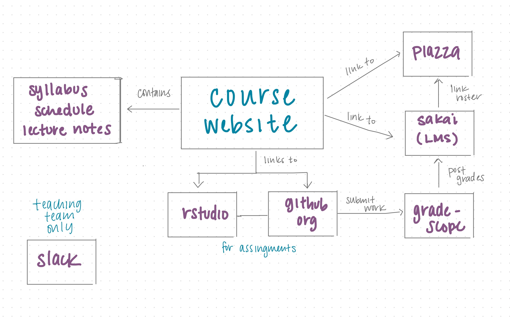

Spring 2020 was quite the semester (to say the least), so I thought it’d be worth writing about the experience of going from face-to-face (f2f) to “emergency remote” teaching. There’s a lot to share, so I’m splitting it into two posts:
👩🏾🏫 Part 1: The infrastructure for my undergraduate regression course
👩🏾💻 Part 2: What changed in the transition to a remote class, including what worked and what didn’t work.
*Note: Like many others, I’m using the term “remote” teaching/learning instead of “online” to differentiate what happened in Spring 2020 from the well-designed online courses that take months of thoughtful and careful planning.
Before I talk about the infrastructure, here is a brief description of the course to give you some context:
Regression Analysis is a second-semester undergraduate course focused on analyzing multivariate data using regression models. In addition to learning the statistical methods, a large component of the course is learning how to use R and GitHub to conduct analyses that are reproducible and incorporate version control. A more detailed description of the course is at the top of the course website.
In Spring 2020, there were 90 students from all years and a variety of majors. The whole class met face-to-face twice a week for lecture, and smaller labs (30 students each) met once a week. Aside from these meetings, the course was primarily managed online. As you might expect, the lectures and labs changed the most after the transition, but the rest of the course remained largely unchanged given the online-supported infrastructure already put in place. I’ll talk more about the changes in Part 2, but for now I’ll focus on the infrastructure.

In short, the infrastructure for the course can be described as “online-supported”, i.e. most of the course is facilitated online and is anchored by in-person lectures and labs. I based this infrastructure on the one described in Data Science in a Box, where you can find more detail about how to set up the various components described below.
Course website: The course website is the central hub for the course. This is the place where students can access anything they need including the syllabus, course schedule, lecture slides, and assignment instructions from the website. It also includes links to the other platforms we use (e.g. Sakai, GitHub). I encourage students to bookmark the course website, since it is the one-stop shop for everything they need in the course.
Learning Management System (LMS): All protected content, such as grades, are put in the LMS. It also includes links to the course schedule, syllabus, and the platforms mentioned below, in case students would rather navigate the course through the LMS rather than the website.
RStudio: Students use RStudio hosted in Docker containers maintained by the university’s Office of Information Technology. RStudio Cloud is a cloud-based platform provided and maintained by RStudio that is another nice server-based option. One of the primary benefits of having students use a server-based version of RStudio is they access through a web browser, so they can use RStudio on almost any device, including tablets and Chromebooks. The paper Infrastructure and tools for teaching computing throughout the statistical curriculum discusses many of the other benefits of having students used RStudio through a server (rather than local installations).
Gradescope: Students submit their assignments on Gradescope, an online grading and rubric platform. Not only does it make grading quicker and more consistent, but it makes it easy for students to see the feedback on their assignments. It can sync with numerous LMS, so the grades can easily be posted in the gradebook in the LMS. The talk AI Assisted Fair and Efficient Grading in the Statistics and Data Science Classrooms provides a good introduction to using Gradescope for statistics assignments.
If you’re curious how all these pieces connect, the slides from the talk Using GitHub and RStudio to facilitate authentic learning experiences in a regression analysis course show the work flow for a homework or lab assignment.
Student Q&A: We use Piazza, an online Q&A platform to post questions about assignments and the course content. Anyone in the course can respond to the question, so this gives students an opportunity to answer each others’ questions. It also keeps me and the teaching assistants from answering the same questions multiple times.
Teaching Team Communication: I use Slack to communicate with the teaching team. We have multiple channels - general, hw, labs, exams, project, office-hours - to help organize the conversation. Aside from an initial email at the beginning of the semester, all communication with the teaching team occurs in Slack. This helps keep everything in one place, and the more relaxed nature of Slack (compared to email) encourages more frequent discussion and idea sharing.
That sums up the course infrastructure. In Part 2, I’ll share how the course changed when we transitioned to remote teaching. Spoiler alert: the online-supported infrastructure made the transition much smoother.